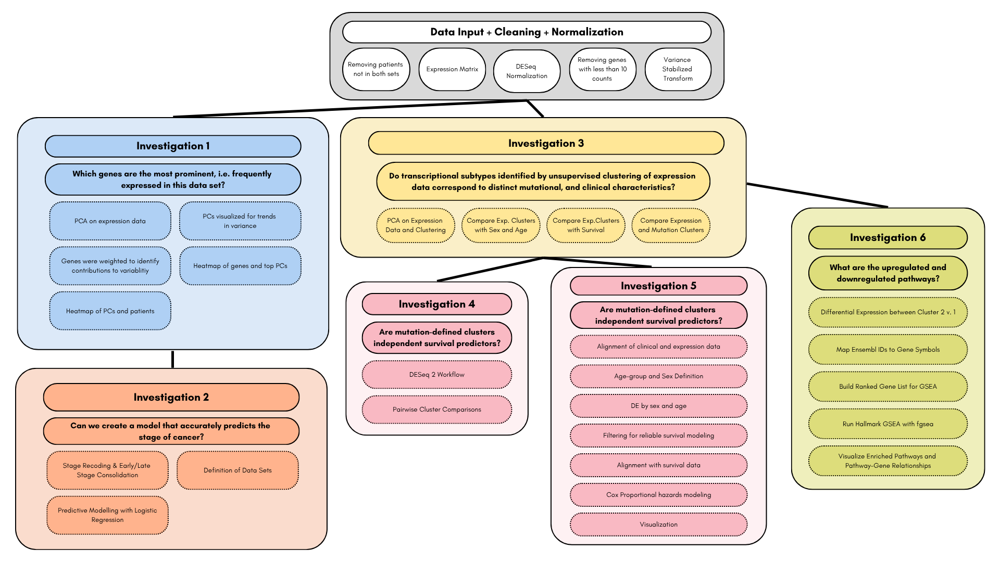

Liver Hepatocellular Carcinoma Analysis
This team project investigated mutation, clinical and RNA-sequencing patterns in liver hepatocellular carcinoma using data from The Cancer Genome Atlas. We developed an R-based analysis pipeline to connect genomic variation and gene-expression structure with patient characteristics, cancer stage and multiple survival outcomes.

Analysis Workflow

Mutation & Clinical Analysis
We standardized TCGA patient identifiers, matched mutation records to clinical data and filtered for non-synonymous variants affecting coding regions. From these records, we constructed a binary gene-by-patient mutation matrix, calculated tumor mutation burden and explored relationships with age, sex, race and grouped cancer stage. Mutation-based patient clusters were evaluated across overall, disease-specific, progression-free and disease-free survival using Kaplan–Meier curves and Cox proportional-hazards models.
Expression & Pathway Analysis
RNA-sequencing counts were matched to clinical records, filtered and normalized with DESeq2 before variance-stabilizing transformation. Highly variable genes supported PCA and hierarchical clustering, while differential-expression comparisons characterized expression-defined patient groups. We also used Hallmark gene-set enrichment analysis to investigate the biological pathways represented by cluster-level expression differences.
Tools & Methods
R, R Markdown, TCGA clinical and genomic datasets, DESeq2, survival, survminer, ggplot2, dplyr, hierarchical clustering, PCA, differential expression, gene-set enrichment, Kaplan–Meier analysis and multivariable Cox regression.